5–8 ноября 2026 года вся страна – от пятиклассников до людей старшего возраста – ответит на вопросы об истории, культуре, праве, религии и единстве народов России. Присоединяйтесь и Вы!
Мы должны сделать все, чтобы сегодняшние дети и вообще все наши граждане гордились тем, что они наследники, внуки, правнуки победителей. Знали героев своей страны и своей семьи, чтобы все понимали, что это часть нашей жизни.
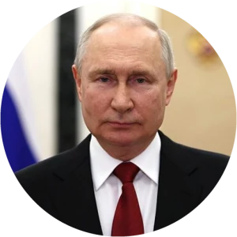
В. В. ПутинПрезидент Российской Федерации«
Гражданско-патриотический диктант – не просто интеллектуальное испытание. Это возможность вместе вспомнить нашу героическую историю, обратиться к духовным истокам и почувствовать себя частью большой общности. Мы создаём будущее страны, где чувство личной ответственности и гражданская солидарность становятся настоящей силой, объединяющей народ.
А. Г. КомиссаровРектор Президентской академии«
Сейчас – время сосредоточения и возрождения тех главных нравственных и духовных традиций, которые наши предки выработали за столетия. Наш долг – сохранять и преумножать этот опыт. Благословляю всех участников и желаю успеха в этом значимом деле.
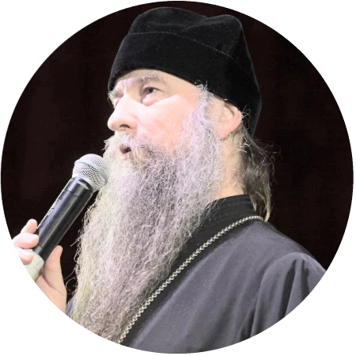
Епископ Сергиево-Посадский и Дмитровский КириллРектор Московской духовной академии, президент НОТА
Цель и задачи
Цель и задачи диктанта
Цель диктанта
Укрепление гражданского мира и согласия в России, а также единства народов нашей страны на основе общероссийской гражданской идентичности.
Задачи:
Выявление усвоенного и реализуемого молодёжью в повседневной жизни набора ценностных ориентаций
Поддержка государственной политики в сфере воспитания и обучения
Разработка предложений по практической реализации Стратегии развития системы воспитания и Стратегии национальной безопасности Российской Федерации
Сохранение и укрепление традиционных духовно-нравственных ценностей
Недопущение фальсификации исторических событий и сохранение памяти о значимых достижениях российского государства с его многовековой историей
Формирование в молодёжном сознании общественно-значимых ориентиров развития российского общества
Новости
Новости диктанта
Диктант в разрезе 4 сезонов
Растём вместе со страной
Каждый год диктант объединяет всё больше людей из всех субъектов Российской Федерации.
Участники
0тысяч человек в 2025 году
География
0регионов – вся страна
382022
802023
892024
892025
Базовые площадки
0площадок в 2025 году
122022
452023
532024
682025
О чём диктант
Как всё устроено
Тематические блоки 2026 года
Из них состоит каждый вариант диктанта
ИсторияКультураГод единства народов РоссииПравоГражданская идентичностьРелигии
30вопросов в каждом варианте диктанта
40 минна прохождение теста
Диктант – для всех
Вопросы адаптированы под три возрастные категории – каждому будет интересно и по силам.
Школьники 5–11 классовСтуденты вузов и СПОВзрослые и пенсионеры
Сертификат участника будет отправлен на Вашу электронную почту в течение 48 часов после прохождения диктанта
Медиа диктанта
Как это было в прошлые сезоны
Торжественные открытия, подведение итогов, гимн в исполнении почётного караула Президентской академии и тысячи людей, которые в одну минуту берут в руки телефоны и вспоминают историю.
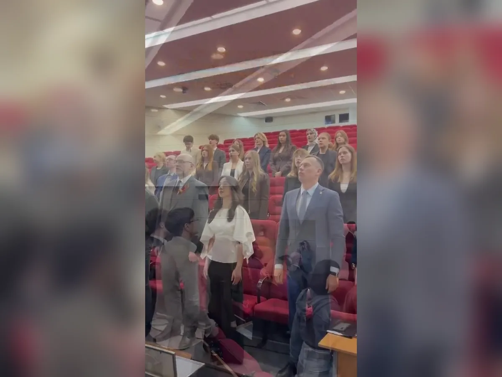
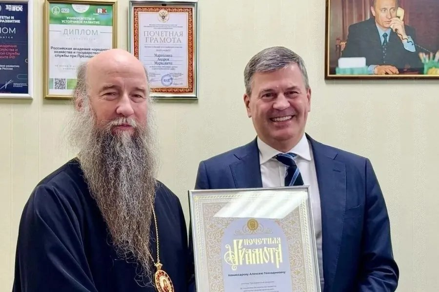
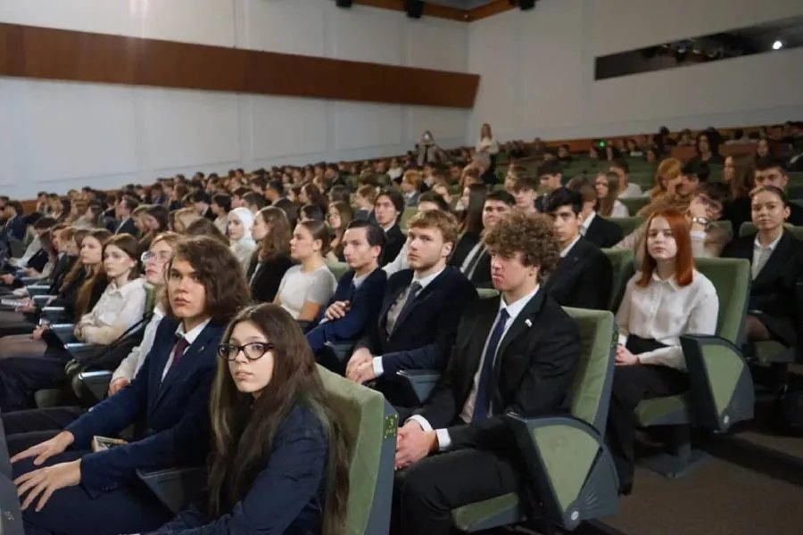
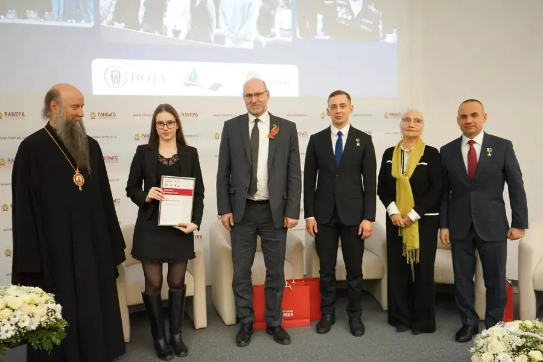
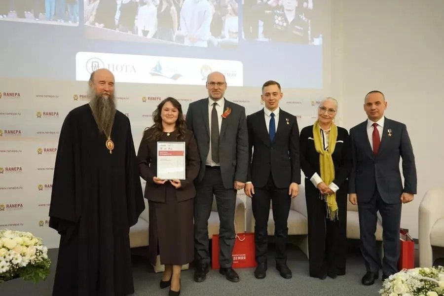
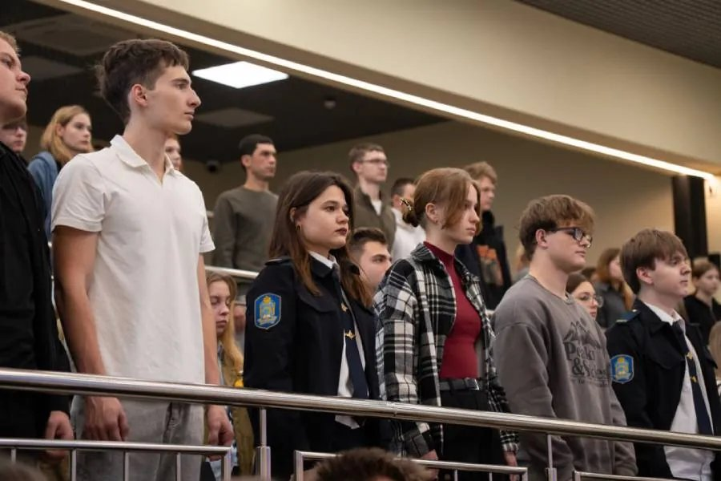
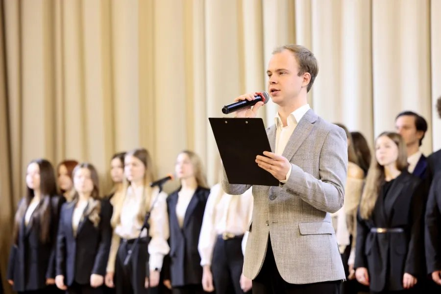
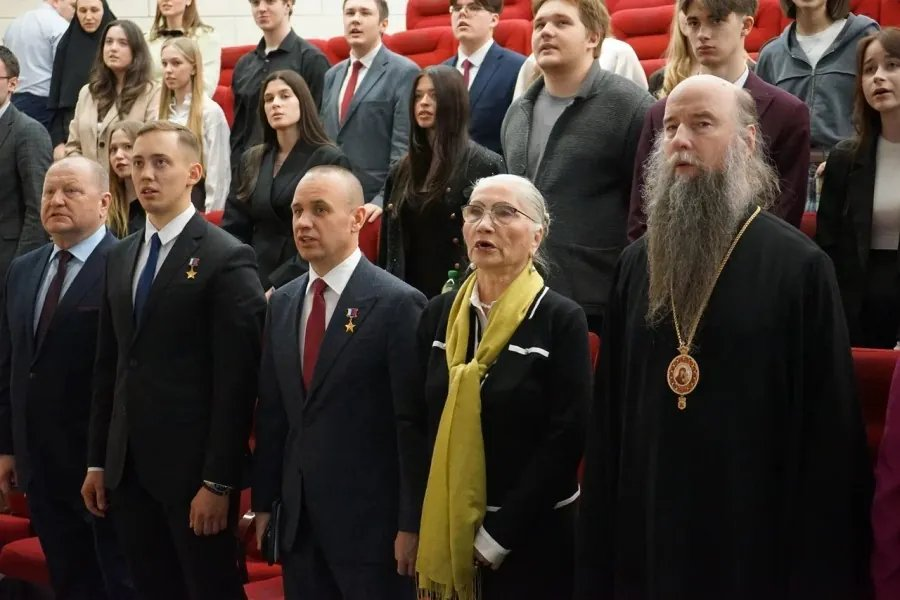
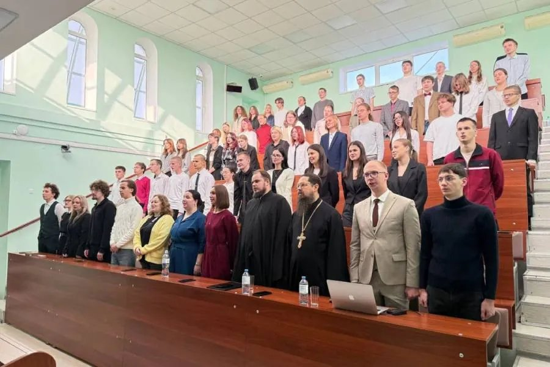
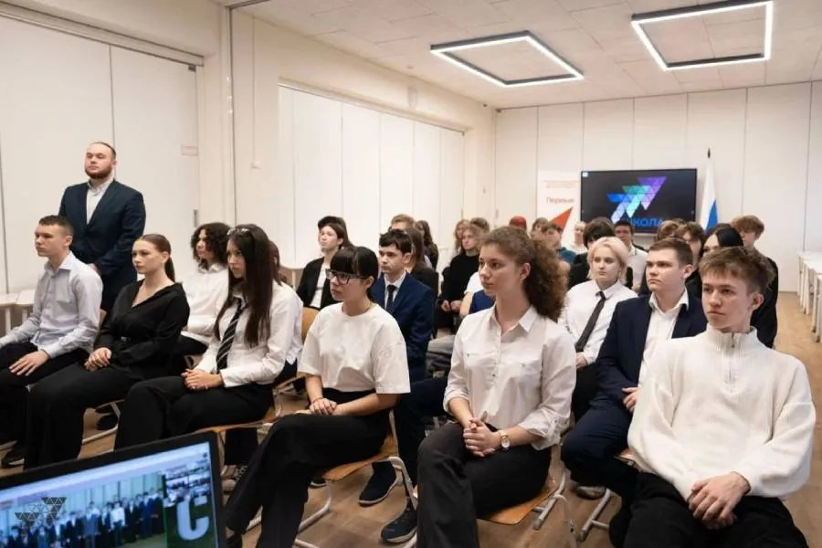
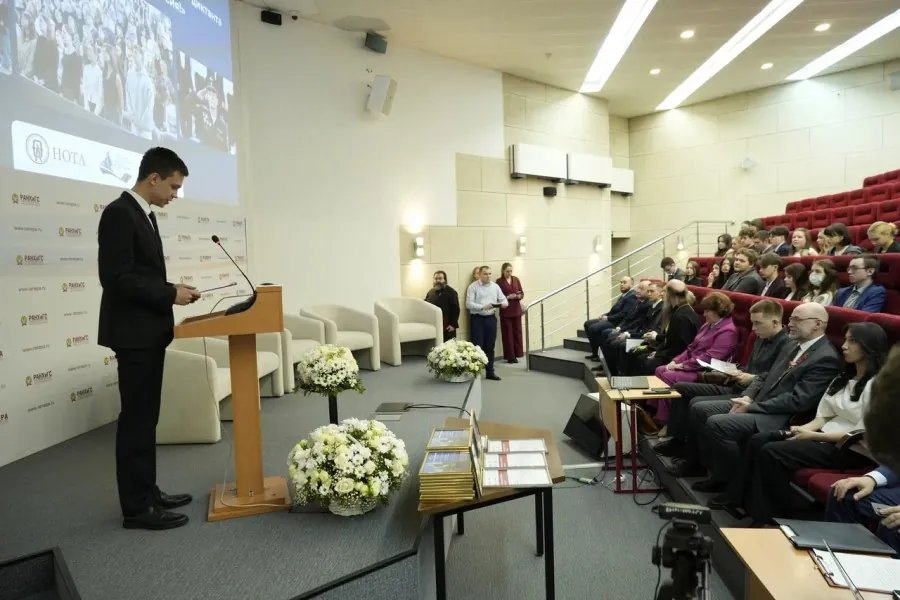
01 / 24
Награды
Призы абсолютным победителям
Максимальные 30 баллов – и Вы среди победителей сезона.
Приглашение на торжественную церемонию награждения в Президентскую академию с экскурсией по кампусу.
Набор мерча
Фирменный набор сувенирной продукции проекта.
Почётные гости диктанта
Наш Диктант поддерживают известные люди страны
Вопросы и ответы
Спрашивали? Отвечаем
Вы можете проверить свои знания, выразить свою гражданскую позицию и внести личный вклад в сохранение культурного и исторического наследия страны.
Принять участие могут все желающие старше 11 лет, в том числе из-за рубежа.
Диктант начнётся 5 ноября в 10:00 по московскому времени и будет доступен для прохождения до 23:59 по московскому времени 8 ноября.
Все необходимые материалы собраны в специальном разделе для подготовки – видеолекции, статьи и тренировочные тесты.
Сертификат направляется всем, кто полностью и верно заполнил регистрационную форму после прохождения. Если Вы всё сделали правильно, проверьте папки «Спам», «Рассылки» или «Нежелательная почта». Если там нет документа, обратитесь на электронную почту Оргкомитета проекта diktant-russia@ranepa.ru с темой «Не пришёл сертификат участника».
Борисенков Алексей АлександровичРуководитель Организационного комитета проектазаместитель декана факультета государственного и муниципального управления Института государственной службы и управления Президентской академии
Макаров Андрей ВикторовичСоруководитель Организационного комитета проектаадминистратор программы «Внутренняя политика и лидерство» факультета государственного и муниципального управления Института государственной службы и управления Президентской академии